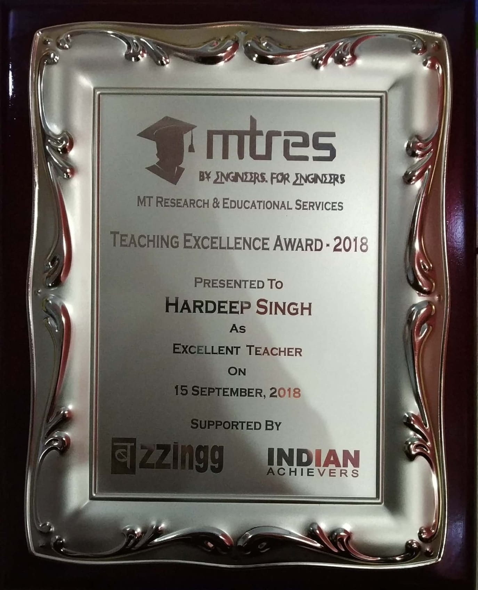
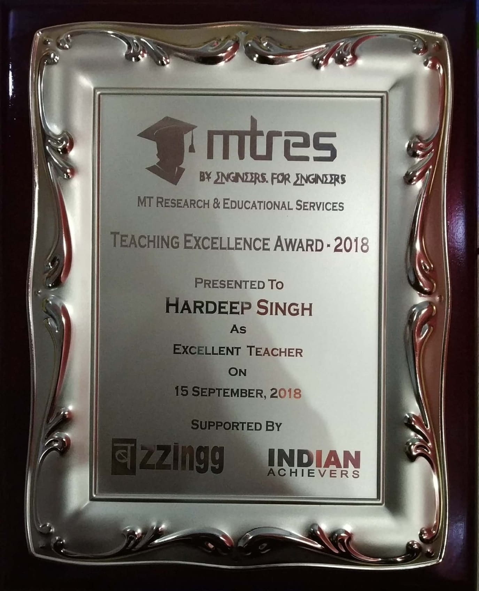

Hardeep Singh Honoured With Teaching Excellence Awards 2018
An award is something given to a person in recognition of his excellence in a certain field. Teaching Excellence Awards 2018 (TEA - 2018) was an effort of MT Research and Educational Services (MTRES) in association with Buzzingg and Indian Achievers Story to recognition the best teachers (Nation Builders) for their special contribution in respective domain. Meet one of the awardees, Hardeep Singh, who has been honoured with TEA-2018 as Excellent Teacher.
MTRES is doing a very appreciable job in the field of education by motivating the educators. It is really a social service. I am very thankful to MTRES for providing a platform where achievers have been selected and honoured with suitable awards. I would like to remain connected with MTRES to participate in social service in field of education
Hardeep Singh
 

Hardeep Singh was honoured with MTRES Teaching Excellence Award 2018
Born and raised in Amritsar, Punjab, Mr. Hardeep Singh is an academician, researcher, author, orator and much more. Working as an Assistant Professor and Head at Ferozepur College of Engineering and Technology (FCET), Ferozepur, Mr. Singh has 16 years of experience. Mr. Singh has been included in the World Book of Researchers 2018, to be published at Oxford, United Kingdom. Teaching has been Mr. Singh passion since the beginning of his career. He has taught classes encompassing subjects such as Human Resource Management, Total Quality Management, Principles of Engineering Economics & Management, Corporate Legal Environment, Business Environment and many more. Other job responsibilities include to arrange Industrial Trainings for B.Tech students and to get them placed in suitable organizations of well repute with good packages, to guide the students regarding career options, Importance of soft skills in career building, interview skills and importance of CV/Resume, how to make an effective CV/Resume, organize research & corporate meets, guide training projects reports, project reports & organizing/attending HR meetings, PDP, FDP, Conferences, Seminars, Guest Lectures, facilitate organization development & management skills and coordination to build up healthy circle. His additional duties include Programme Officer-National Service Scheme NSS under IKG Punjab Technical University, Kapurthala (Punjab) India and Punjab Technical University Examination Duties (Question Papers Collection and Delivery) under IKG Punjab Technical University, Kapurthala (Punjab) India. Apart from this he has also served as Examination Center Superintendent/Observer for Online Banking Competition and Promotion Exams held by Institute of Banking. He has been nominated for the ‘Swami Vivekananda National Award for Excellence in HR and Training’ by the Indian Society for Training and Development (New Delhi). He was awarded the ‘Best Young Teacher Award 2016’ from Shri Shaik Mohammad Saleem, Deputy Commissioner, Kendriya Vidyalaya Sangathan (Chennai). He has also been appointed as the Coordinator of the Foundation for the Study of Literature and Environment (India), for the Punjab region.
Best Young Teacher Award 2016 at Grabs Awards Ceremony at Chennai
Besides teaching, Mr. Singh has also conducted a significant number of research projects, in areas such as Management, Human Resource Management, Marketing Management, Knowledge Management, Time Management, Green Management and more. He has guided 100+ projects to the students of B.Tech and MBA. He also guides M.Tech Students and even Ph.D candidates for writing and publication of Research Papers. Mr. Singh has presented 31 Editorial Art Journals, 34 Papers in National Conferences, 10 papers in National Seminars, and 36 papers in International Conferences, a Total of 113 papers throughout his career so far. Mr. Singh has authored two books. He is working on other three books co-authored by Dr. D. P. Kothari, Prof. J. S. Jogi and Prof. Bikram Pal Singh. His research work includes ‘A Study of Comparative Marketing Strategies of Branded vs Privately Labeled Apparels in Selected Department Stores’, ‘A Study of Development of Indian Pharmaceutical Market in Post VAT and Post GATT Period and Prescription Habits of Doctors.’. Mr. Singh received the Award of Honor from DAV College, Malout, Punjab, for his paper titled ‘Higher Education in India: Challenges Ahead’.

Republic Day Acheiver Award 2017 at Loyalla College of Engineering, Chennai
He was also awarded the ‘Best Young Researcher 2017’ from Shri. Shaik Mohammad Saleem, Deputy Commissioner, Kendriya Vidyalaya Sangathan, Chennai in the GRABS Awards 2017 Ceremony and the ‘Republic Day Achievers Award, 2018’ named as ‘Young Researcher’. Mr. Singh has also received the ‘Global Outreach Education Award for Excellence’, Young Researcher in Human Resource Management for Outstanding Achievements through research, development, innovation, leadership, dedication and commitment towards learning in India’s first and only Education Industry Gathering, Global Outreach Education Conference and Awards 2018. Aside from his Achievements in the teaching and research field, Mr. Singh has also received the ‘Peace Award’ from the Institute of Education, Research & Development (Calcutta) Mr. Hardeep Singh is a life member of various associations such as the International Association of Computer Science and Information Technology (Singapore), International Economic Development and Research Center (Hong Kong), Indian Society for Training and Development (New Delhi), Punjab Commerce and Management Association (Chandigarh), The Institution of Electronics and Telecommunication Engineers (Delhi) and a member of associations such as the ‘International Forum of Researches, Students and Academician’, ‘Asia Pacific Business Innovation & Technology Management Society’, ‘International Society for Commerce and Management Studies’ and many more. My future plan is to become a renowned teacher by creating more and more successful bright scholars who may serve my society and do something more important for the development of my country and a well known famous author by authoring standard books. Secondly, I crave to work on the research projects as per the research plans that may again be beneficial for the students, society and the country. Thirdly, to become an Expert Speaker, Key Note Speaker, Impressive Orator and Motivational Speaker is again another real dream that I always cherish and aspire to work upon.